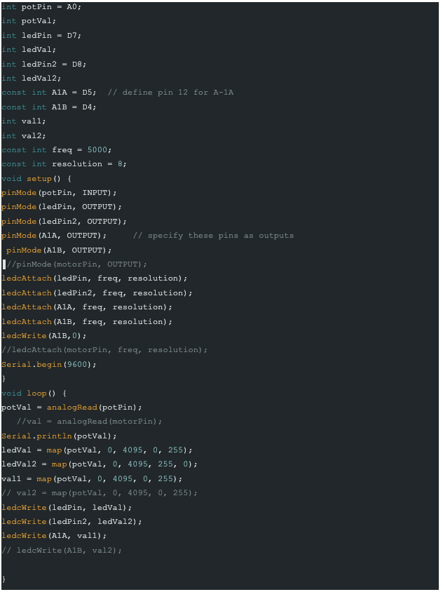
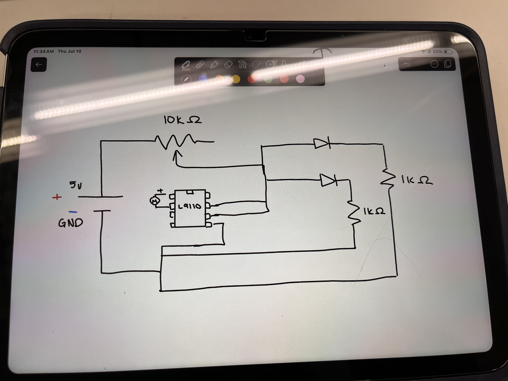
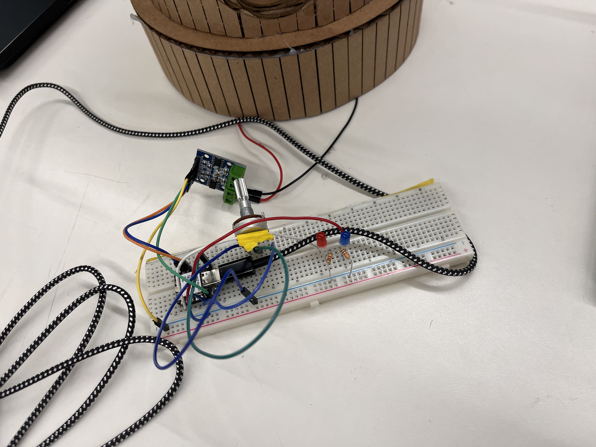

<div class="textcontainer">
<p class="margin"> </p>
<h3>Week 4: Microcontroller Programming</h3>
<h4></h4>
<img src="lights.gif" width="300" height=auto alt="Fixed Size Image" alt="placeholder for you about me image">
<p class = "margin"></p>
For my arduino project I extended my last carousel project. I added lights as indicators as to what speed you were at as if it were a real ride. When the red light dims and the blue slowly comes to light (with the help of a potentiometer), that indicates the ride is coming to a stop and you may approach the ride. When the blue slowly fades and the red light slowly brightens, the speed of the carousel progressively increases in speed from slow to fastest (fastest is when the light is totally red and there are no blue) and you are not allowed to approach the ride (as a passenger, because the red is a warning). Below is my code.
<p class = "margin"></p>

<p class = "margin"></p>
This was the code I had, to make sure that one light faded at the same time another got brighter, I switched one's 255 and 0 so it would go from 255 to 0 while the other light went from 0 to 255. I also coded in the motor to correspond with the red light's turning on by coding one pin to be 0 while the other varies with the potentiometer. Finally below you can see my wiring and my schematics!
<p class = "margin"></p>


</div>